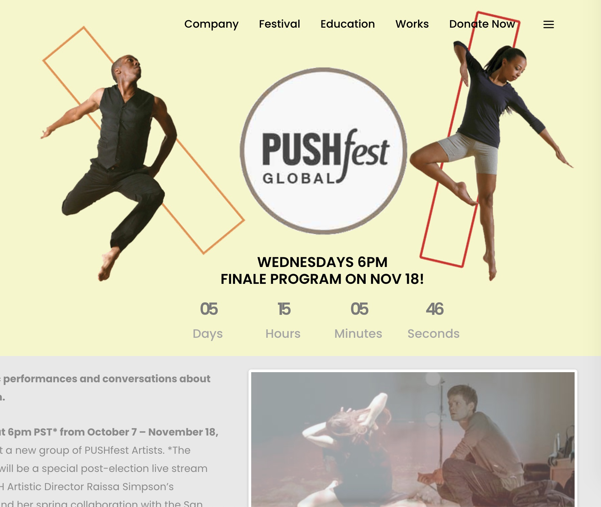

PORTFOLIO
Quiet resolve. Impactful work.
Project 1 | Animating an otherworldly space nebula for a background projection can be daughting. Luckily, I was to blend coded expressions used to modify the Adobe© AfterEffects default settings.
Fast-forward to 4:30pm to see a planetary nebula.

Project 2 | I love moding the open source nature of Wordpress websites with Javascript. An example of this is can be found in how bridging Eventbrite API with a contemporary design.
Project 3 | My Creative Director skills are on display for this short dance film where I got the chance to work with a group of 8 dancers and a videographer.